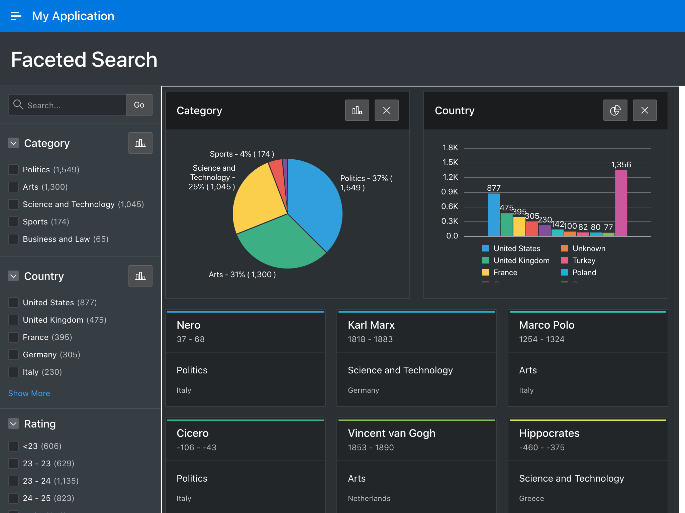
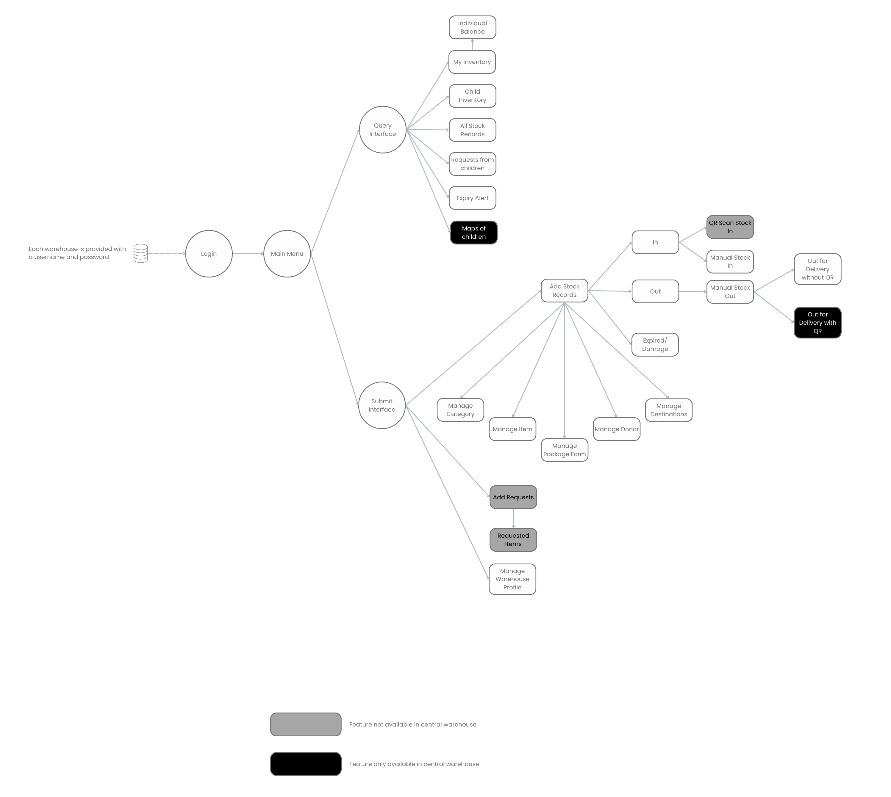

CONSULTANCY REPORT
September 31, 2022.
CONSULTANCY REPORTSeptember 31, 2022.Executive SummaryObjectivesOutcomesConclusions and RecommendationsConsultant BackgroundAbstractLogistic Management Information System (LMIS)Online Classroom1.0 Introduction1.1 Oracle Application Express (APEX)1.2 Inventory Management System: a prototype of LMIS1.2.1 Application Users1.2.2 Landing Page and the Main Menu1.2.2 (a) Query InterfaceMy InventoryIndividual BalanceChild InventoryAll Stock RecordsRequests from ChildrenExpiry AlertMaps of Children1.2.2 (b) Submit InterfaceAdd Stock RecordsRequest FormsManage Warehouse Profile1.2.3 Data Ownership1.3 Moodle Learning Management System1.2 Instructor-Led vs Self-Paced Learning Modalities2.0 Project Approach3.0 Project Outcomes4.0 Conclusions and Recommendations5.0 Glossary
Executive Summary
Objectives
- To continue setting up the online classroom for EHSSG
- To finish creating
First Aid Care Training for Conflict Related Injuriesonline course - To finish editing training material videos from
First Aid Care Training for Conflict Related Injuriesonline course - To create video animations relating to study materials for
First Aid Care Training for Conflict Related Injuriesonline course - To create accounts for students and assist in online course enrollment
- To supervise a new recruit for creating training videos
- To build a warehouse computer system and Logistic Management Information System (LMIS) for selected warehouses on Thailand-Burma border
Outcomes
- A
Logistic Management Information System(LMIS) is being developed underway First Aid Care Training for Conflict Related Injuriesonline course was continued creating with a majority of video materials- Training material videos were continued editing
- Animated video clips are created to use in
First Aid Care Training for Conflict Related Injuriesonline course - Six videos were created during September 2022:
- Chapter03 Video06
Circulation Assessment(View) - Chapter03 Video07
Pelvic Binder(View) - Chapter03 Video08
Hypothermia and Head Injury(View) - Chapter04 Video01
Wound Care Algorithm(View) - Chapter05 Video01
Fracture(View) - Chapter05 Video02
Splinting(View)
Conclusions and Recommendations
A Logistic Management Information System (LMIS) is being developed and estimated beta testing phase should be started on first week of October. The EHSSG warehouse is going to be the first to test the beta system.
EHSSG has started creating an online course on
First Aid Care Training for Conflict Related Injuriesand aBasic Course on Using Computer.First Aid Care Training for Conflict Related Injuriesonline course is not accepting students yet. The course is still under development. The development process is now faster with a new recruit.- The classroom needs to publicize to attract students after it is launched.
- The
Basic Course on Using Computerhas been created and a batch of students from EHSSG's clinical supervisor internship training have completed the course.
Target audience is inside Burma where internet is often cut.
- Future online courses should include less video materials.
- Existing video courses are pre-recorded and can be assessed at any time.
- Videos should be made available to download.
First Aid Care Training for Conflict Related Injuriesonline course raw materials need placeholder videos.- Though audio contents keep up the coverage of the scripts, there is not enough video contents to match the audio.
- In future projects, the subject matter expert should provide a PowerPoint presentation to help the video editor create placeholder video during audio narration only clips.
The script is the foundation of the entire project.
- Once developed, the script should be made avilable to every team member of the project.
- If the script had changes after it is created, the changes should be notified to every team member of the project. Otherwise, a team member would be creating content based on unused portion of the script.
- The video presenter should use the teleprompter which was already purchased by EHSSG to reduce unnecessary time taken during recording and post-processing.
Putting efforts during audio and video recording saves a lot of time during post-processing.
- The entire post-processing time can be reduced with a script and following the script.
- Rehersing the script helps get rid of mistakes during recording and reduces files clutter saving time taken for post-processing.
Consultant Background
| Name | Dr. Ye Thi Ha Htwe |
|---|---|
| Education | M.B.,B.S(YGN) |
| Past Experiences | - Pharmacy Inventory Mobile Application - Online Classroom with Moodle LMS |
Abstract
Logistic Management Information System (LMIS)
Warehouses on the Thailand-Burma border are working with minimal resources. The major goal of these warehouses is to store supplies and deliver on time to the necessary places in conflict regions of Burma. The Thai government authorities have not given official permission to cross the border from Thailand and bring medicine and related products into Burma. Funds allocated to the warehouses are mostly used for security and transportation rather than establishing a solid infrastructure and a properly managed system. And vice versa, inventory and logistic information of warehouses along the border has not been gathered with an organized system. EHSSG's focus has been shifted to establish an Inventory and Logistic Management System not with the papers but through a network.
Instead of buying a commercial Logistic Management Information System(LMIS) with tons of extra features not in need at an expensive price, EHSSG chose to build a customized LMIS from scratch that matches the ground conditions of warehouses along the border. The entire Logistic Management Information System (LMIS) is going to be a cloud based installation which can be accessed through a web browser. Any devices with internet access will be able to login to the LMIS regardless of the screen sizes (Desktop, Laptop, Tablet or phone) and it is going to be platform independent. Devices with any Operating System (Windows, MacOS, ChromeOS, Linux, Android, iOS) will be able to access the cloud based system. Computer systems and internet access points will be installed in established warehouses, and those that do not yet have a fixed location will be assisted to use mobile devices.
Online Classroom
EHSSG has already created an online classroom in https://ehssg.org/school/.
The classroom uses the Moodle Learning Management System (LMS) installed in EHSSG's web hosting. The first course of the online classroom is First Aid Care Training for Conflict Related Injuries which is still under developement process. The major training materials of the course are videos which are 7 minutes to 10 minutes in average length.
Creating the videos basically needs scripting, storyboarding, audio recording, video recording, audio editing, video editing, animation, joing audio-video-animation, captioning and final cut. The FACT course has finished its scripting, storyboarding, audio recording and video recording stages. The most time consuming stage of the process is audio editing, video editing and animation stages. In first week of September 2022, final cut videos for Chapter 3 out of 8 are realeased. The course contains 8 chapters and each chapter usually consists of 5 to 6 videos.
Image:Homepage of EHSSG online school
Once final cut videos are exported, the videos are uploaded to YouTube with Unlisted privacy option. When videos are hosted on YouTube with Unlisted privacy, the viewers with the link to the video can only access it. Any other users who enter the EHSSG's YouTube channel will not see any Unlisted videos. Videos are hosted on YouTube as YouTube offers chapters to be divided in a video from timestamps. Once a subtitle in English is attached to the video, automatic subtitle translation to other languages can be obtained as well. Videos hosted on YouTube are embedded in the pages of the online course reducing tons of storage space and traffic bandwidth to the EHSSG web hosting service 1.
Each module of the course has a viewer restriction option which limits the user from viewing a particular sequel of the study material before viewing the initial foundation material. For example, module-2 of the course is not accessible unless the student has completed module-1.
Image:Future modules are locked before completing first module
Each Chapter usually starts with a Pre-test quiz which either consists of True/False or Multiple Choice Questions and ends with the same Post-test quiz. Though the Pre-test doesn't provide grades, the Post-test does grading on the students' performance.
Image:A Quiz Page
1.0 Introduction
1.1 Oracle Application Express (APEX)
 Image:An Oracle APEX application
According to apex.oracle.com, Oracle Application Express (APEX) is a low-code development platform that enables building scalable, secure enterprise apps, that can be deployed anywhere. Using APEX, developers can quickly develop and deploy apps that solve real problems and provide immediate value.
Oracle database is a Relational Database Management System (RDBMS) similar to MySQL which is also owned by Oracle. Oracle database can be utilized for applications with large scale data and relational operations. It offers cloud based application development for free. Since Oracle APEX is a low code development platform, an existing knowledge of HTML, CSS, Javascript and MySQL is required to build full fledged applications.
The Logistic Management Information System(LMIS) is being developed with Oracle APEX.
1.2 Inventory Management System: a prototype of LMIS
Before developing a full fledged LMIS, an Inventory Management System is created based on previous Pharmacy Inventory Mobile Application developed by EHSSG.
 Image:The Wireframe of Inventory Management System
1.2.1 Application Users
Rather than opened to public registration, the Inventory Management Application could only be logged in with a provided Username and Password. The Username is going to be permanently registered with the warehouse name and not likely to be edited. Each user account will be provided with a set up Warehouse Profile which values can be edited later. The Warehouse Profile contains an In Charge field which can be updated anytime with the name of the person managing the warehouse.
1.2.2 Landing Page and the Main Menu
The landing page or the home page of the application is a welcome page to see first once the user has logged in. The landing page is populated with the Query Interface where existing inventory information is going to be displayed in charts, graphs and tables.
The Main Menu is populated with Submit Interface where inventory information is submitted though different pages.
1.2.2 (a) Query Interface
My Inventory
My Inventory page is populated with query information on inventory data of the warehouse linked to the user. The page is displayed in
CardsLayout showingItem,CategoryandAmountwhich can be filtered with Search, Category and Source (Donor). Filtered views for items with a defined minimal stock amount and items closing to a defined expiry date are likely to be created if required.
Individual Balance
When a card populated with
Item,CategoryandAmountis clicked, the application will redirect the user to the detail page of eachItemwhere different inventory information on the sameItemwith differentBatch Number,Expiry DateandSourceare displayed. The incoming and outgoing stock records will also be displayed in list view.
Child Inventory
This page works the same as My Inventory page but displays the inventory information of child warehouses. The database administrator of the Inventory Management Application will manually define the hierarchy.
All Stock Records
Stock In,Stock Out,Expired,Damagedinformation for the current warehouse will be displayed in All Stock Records page sorting withDateof the record. Like other report pages, the result can be filtered with Category, Search, and Source (Donor).
Requests from Children
The page displays information listing Request Forms from child warehouses sorted with Requested Date. After clicking individual requests, it will be redirected to a detail page of the Request Form including
Requested MedicineandAverage Monthly Consumption.
Expiry Alert
The Main Menu of the application will show a notification icon and upon clicking, display a modal dialog page listing notifications. The Expiry Alert Page is going to be redirected after clicking the expiry alert notification. The notification date to the impending expiry can be defined manually.
Maps of Children
For statistical and management infromation, Geolocation of the service is necessary. Security concerns, however, prohibit disclosing the geolocation of the warehouses. The Map of Children page is going to show a map locating warehouses along the border as much information available.
1.2.2 (b) Submit Interface
Add Stock Records
All types of stock records can be filled in this page.
Stock In,Stock Out,Expired,Damageinformation can be selected from a Dropdown menu. From Manage Category page, the user can add or remove Category of the item. Manage Item page allows the user to add or remove an Item to or from the list populating the Item Dropdown menu. Manage Package Form lets the user to edit Package Form list where Package Form Dropdown menu loads its data. Manage Donor page is where the user can edit the list of donors. AtManage Destination page, the user can edit the delivery destination of each item.
Request Forms
Only child warehouses can submit request forms. This information is not only for statistical purposes, the requested data is automatically delivered to the respective parent warehouse.
Manage Warehouse Profile
Any changes to the data collecting person such as Name, Location, Geolocation can be edited in this page.
1.2.3 Data Ownership
EHSSG may have access to the Database during initial set up and technical support period. Once the data collecting persons and database administrators, after proper and thorough training, are able to operate independently, the ownership of the copy of the Inventory Management Application and the Database will be provided to individual organizations. The information from the Database can be backed up by downloading, printing and sending to Email.
1.3 Moodle Learning Management System
Introduction to Moodle LMS was described in the previous report. Moodle is an online Learning Management System (LMS) that can be installed in moodlecloud or private websites.
1.2 Instructor-Led vs Self-Paced Learning Modalities
Comparison Table of Instructor-Led vs Self-Paced Learning
| Instructor-Led | Self-Paced | |
|---|---|---|
| Course start | Specified by Instructor | Started by the student |
| Duration | Specified by Instructor | Depends of the student's own pace of learning |
| Instructor Led | Yes | No |
| Discussion | Peer to peer and Peer to Instructor | Peer to Peer |
| Content Access | As provided by Instructor | Available upon completion |
2.0 Project Approach
Since the online course mainly consists of videos, the process is as follows:
ScriptingStoryboardingAudio recordingVideo recordingAudio EditingVideo EditingAnimationJoining Audio-Video-AnimationCaptioningFinal CutPlease refer the previous reports for detail breakdown of each step.
3.0 Project Outcomes
- A
Logistic Management Information System(LMIS) is being developed underway First Aid Care Training for Conflict Related Injuriesonline course was continued creating with a majority of video materials- Training material videos were continued editing
- Animated video clips are created to use in
First Aid Care Training for Conflict Related Injuriesonline course - Six videos were created during September 2022:
- Chapter03 Video06
Circulation Assessment(View) - Chapter03 Video07
Pelvic Binder(View) - Chapter03 Video08
Hypothermia and Head Injury(View) - Chapter04 Video01
Wound Care Algorithm(View) - Chapter05 Video01
Fracture(View) - Chapter05 Video02
Splinting(View)
4.0 Conclusions and Recommendations
A Logistic Management Information System (LMIS) is being developed and estimated beta testing phase should be started on first week of October. The EHSSG warehouse is going to be the first to test the beta system.
EHSSG has started creating an online course on
First Aid Care Training for Conflict Related Injuriesand aBasic Course on Using Computer.First Aid Care Training for Conflict Related Injuriesonline course is not accepting students yet. The course is still under development. The development process is now faster with a new recruit.- The classroom needs to publicize to attract students after it is launched.
- The
Basic Course on Using Computerhas been created and a batch of students from EHSSG's clinical supervisor internship training have completed the course.
Target audience is inside Burma where internet is often cut
- Future online courses should include less video materials.
- Existing video courses are pre-recorded and can be assessed at any time.
- Videos should be made available to download.
First Aid Care Training for Conflict Related Injuriesonline course raw materials need placeholder videos- Though audio contents keep up the coverage of the scripts, there is not enough video contents to match the audio
- In future projects, the subject matter expert should provide a PowerPoint presentation to help the video editor create placeholder video during audio narration only clips.
The script is the foundation of the entire project
- Once developed, the script should be made avilable to every team member of the project.
- If the script had changes after it is created, the changes should be notified to every team member of the project. Otherwise, a team member would be creating content based on unused portion of the script.
- The video presenter should use a teleprompter which was already purchased by EHSSG to reduce unnecessary time taken during recording and post-processing
Putting efforts during audio and video recording saves a lot of time during post-processing.
- The entire post-processing time can be reduced with a script and following the script
- Rehersing the script helps get rid of mistakes during recording and reduces files clutter saving time taken for post-processing.
Image:Teleprompter
5.0 Glossary
| Keyword | Description |
|---|---|
| CSS | Cascading Stylesheet |
| EHSSG | Ethnic Health System Strengthening Group |
| FACT | First Aid Care Training for Conflict Related Injuries |
| HTML | Hypertext Markup Language |
| HTML5 | Hypertext Markup Language version-5 |
| LMIS | Logistic Management Information System |
| MySQL | My Structured Query Language |
| Oracle APEX | Oracle Application Express |